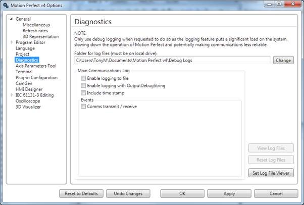

This page give options for diagnostics functions used to aid Trio Motion Technology in finding and rectifying faults in Motion Perfect.
Diagnostic functions should only be enabled on instruction from Trio Motion Technology as they reduce the application's performance and can lead to the application being less reliable.